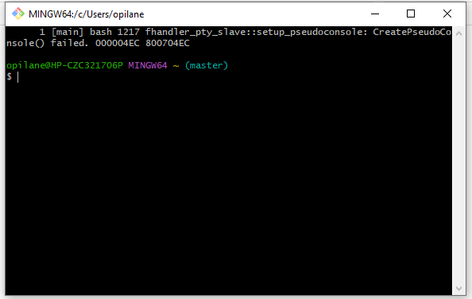

Visual Studio sisaldab koodiredaktorit, debuggerit, versioonihaldust ja testimise vahendeid, mis võimaldavad arendajatel kirjutada, haldada ja testida oma koodi mugavalt samas keskkonnas.
Visual Studio toetab mitut programmeerimiskeelt, sealhulgas C#, VB.NET, F#, C++, ja palju teisi. See võimaldab arendajatel luua erinevat tüüpi rakendusi vastavalt nende vajadustele ja eelistustele.
Plattform sisaldab tarkvara testimise tööriistu, mis võimaldavad arendajatel testida oma rakendusi automaatselt või käsitsi, jälgida tulemusi ja veateateid ning lahendada probleeme.
See pakub tööriistu mobiilirakenduste arendamiseks Androidi ja iOS-i jaoks, sealhulgas integreeritud emulaatorid, tugi populaarsete raamistike ja platvormide jaoks ning muud vajalikud vahendid.
See toetab mitmesuguseid programmeerimiskeeli, sealhulgas Java, Kotlin, Groovy, Scala, ja palju teisi.

Git võimaldab mitmel arendajal töötada koos samal koodibaasil, jagades muudatusi ja lahendades konflikte.
Git jälgib kõiki muudatusi koodibaasis, võimaldades arendajatel vaadata varasemaid versioone, võrrelda muudatusi ja teha vajadusel tagasipöördeid.
